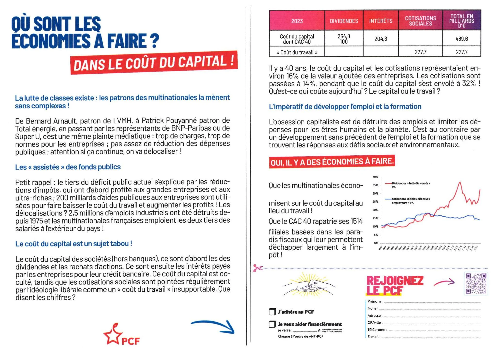

Prise de position
« La lutte des classes existe ». Notre publication sur le coût du capital
Date indiquée par Facebook · 6 mars 2025
Repères éditoriaux
Nous avons relayé ce tract du PCF qui met en regard le coût du capital et les économies réclamées au monde du travail. Le document complet figure dans la publication du 28 mars.
Texte conservé avec la publication
La lutte des classes existe : les patrons des multinationales la mènent sans complexe.

Sources
Archive rouge · export Facebook · AR-0002-FB-01179
À lire aussi · « Où sont les économies à faire ? Dans le coût du capital ! »